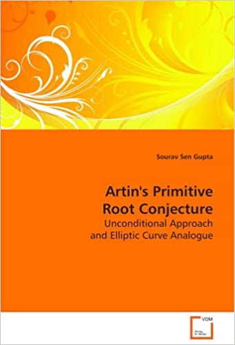
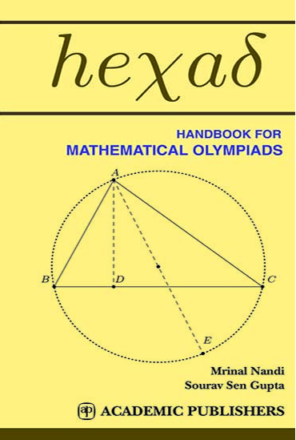
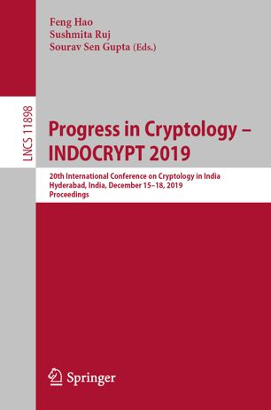

Lecturer, School of Computer Science and Engineering
Nanyang Technological University, 50 Nanyang Avenue, Singapore 639798
Office : N4-02b-45
Phone : +65 6790 4587
sg.sourav@ntu.edu.sg
Activities
I take an active interest in mentoring undergraduate and graduate students in research areas of my interest. I also love to deliver talks and workshops to make technology accessible to diverse interest groups and audiences. Time and again, I participate in professional services as an active member of the global academic community, and consult industry partners on problems of mutual interest. Occassionally, I write code to help me teach and learn.
You may check out my professional profile on LinkedIn for more details reagrding my latest activities. You will also find some of the code I have written on my github profile.
Books and Monographs
I have authored two books. The first is a monograph from my MMath Thesis, and the second is a book on Mathematical Olympiads written based on my training sessions in India. I have also co-edited the Proceedings for the 20th International Conference on Cryptology in India, 2019.
  Professional Services
Services to School and University
- Fellow, Nanyang Technopreneurship Center, NTU Singapore (July 2021 to June 2023)
- Assistant Chair (Admissions and Outreach), SCSE, NTU Singapore (Apr 2020 to Mar 2022)
- Programme Coordinator, MS in Artificial intelligence, SCSE, NTU (Oct 2021 to Jul 2022)
- Project Coordinator, MS in Artificial intelligence, SCSE, NTU (Aug 2019 to Jul 2022)
- Faculty Advisor, NTU Open Source Society (Aug 2020 to Apr 2022)
- Supporting Faculty Advisor, Blockchain at NTU Club (2018 to 2022)
- Member, Outreach Committee, SCSE, NTU Singapore (2018-2020)
- Speaker and Facilitator, SCSE Open House, NTU Singapore (2019, 2020)
- Judge, SCSE Computing Challenge, NTU Singapore (2019, 2020)
- Mentor to Students, TF LEaRN Programme at NTU (2019)
- Representative of CoE, NTU, for Outreach Trip to India (2019)
- Invited Panelist, Blockchain Symposium, NTU Singapore (2019)
- Speaker at several Outreach Talks for SCSE, NTU Singapore (since 2019)
- Mentor and Judge, BCIC Blockchain Challenge, NTU Singapore (2018)
- Organizer, Blockchain Hackathon, SPIRIT Centre, NTU Singapore (2018)
- Member, Regional Mathematical Olympiad Committee, ISI Kolkata (2016-2018)
- Member, Website Development Committee, ISI Kolkata (2016-2018)
- Member, Development Committee, R C Bose Centre, ISI Kolkata (2014-2018)
Services to the Academic Community
- Organizer, CAAW, Workshop on Cryptoasset Analytics, with TheWebConf (2022)
- Program Co-Chair, INDOCRYPT 2019, Hyderabad, India (Dec 2019)
- Web and Publicity Chair, SPACE 2018, Kanpur, India (Dec 2018)
- Organizing Committee -- SPACE 2018, VLSI Design 2016, INDOCRYPT 2016 2013 2012
- Program Committee Member -- INDOCRYPT 2020 2018 2016 2015 2014, DSIT 2020 2019, ACAI 2020 2019 2018, SPACE 2019 2018
- Reviewer or Sub-Reviewer -- Journal of Cryptology, IEEE Transactions on Computers, IEEE Transactions on VLSI, IEEE Internet of Things, IET Information Security, Microprocessors and Microsystems, Cryptography and Communications, Crypto, Eurocrypt, Asiacrypt, FSE, ACNS, INDOCRYPT, ACISP, SAC, Africacrypt, ProvSec, VLSI Design, WINE
Services to Public and the Industry
- Advisor on a Blockchain project, Daimler South East Asia Pte. Ltd. (since 2020)
- Invited Talk on Blockchain and Cryptocurrencies, ST Microelectronics (May 2021)
- Judge, HackAlliance 2021, NTU's first Interdisciplinary Hackathon
- Data Science Coffee Talk, Invited for a Webinar by Goldman Sachs (Mar 2021)
- Judge, Singapore Science and Engineering Fair, SSEF 2020 2019
- Public Lecture on Bitcoin, Local Outreach Committee, NTU Singapore (2018)
- Panel Moderator, Women in Asia Blockchain Event, Science Park (2018)
- SCSE Faculty Representative, SCS Gala, IT Leader Awards (2019)
- Member, Working Group, Introduction to Blockchain Technology, RBI and IDRBT (2017)
- Co-organizer -- Workshops and training programs in Free and Open Source Software.
Supervision and Mentoring
Final Year Projects (SCSE NTU)
- 2022 : Alice Chua Qin Hui -- Gap to Target Analysis of Critical Paths (AMD)
- 2022 : Gautam Rohan -- Exploring artificial intelligence to gain insight into sea-level variability and limits on the highest level of survival of corals in Singapore
- 2022 : Ahmad Jazli Bin Abdul Razak -- Bring Your Own Project : Machine Learning
- 2022 : Koh Zhuang Chean -- Bring Your Own Project : Blockchain Technology
- 2022 : Adrian Goh Jun Wei -- Automating Data Analysis Pipeline for School Review
- 2022 : Reenashini Rajendran -- Privacy-Preserving Knowledge Graphs
- 2022 : Truong Cong Cuong -- Network Analysis and Traceability on Ethereum Blockchain
- 2022 : Phung Minh Khanh -- Network Analysis and Traceability on Bitcoin Blockchain
- 2022 : Tan Ke Xiang -- Privacy of Blockchain-enabled Internet of Vehicles
- 2022 : Ritik Bhatia -- Design and Development of a Lifestyle Software or Product for Microsoft Imagine Cup 2022
- 2021 : Bisakha Das -- Learning Complex Fine-Grained Robotic Manipulation Tasks using AI
- 2021 : Jiang Ji Xuan -- Analytics-driven Intelligent Dashboard for Air Traffic Control
- 2021 : Samuel Cheah Tien Zhi -- Accident Dashboard for Internet of Vehicles
- 2021 : Koh Wei Xiang, Justin -- Network Analysis and Traceability on Zcash Blockchain
- 2021 : Phua Jia Sheng -- Network Analysis and Traceability on Monero Blockchain
- 2021 : Su Voon Hou -- Network Analysis and Traceability on Ethereum Blockchain
- 2021 : Wang Ying -- Privacy-Preserving Federated Learning using Differential Privacy
- 2021 : Ng Kai Chin -- Privacy-Preserving Statistics using Differential Privacy
- 2021 : Yap Rong En -- Implementing a Textbook Streamlined Blockchain
- 2021 : Jarrold Tan Yu Hng -- Implementing a Textbook Streamlined Blockchain
- 2021 : Koh Hock Kiong Benny -- Privacy-Preserving Auction using Multi-Party Computation
- 2021 : Priscilla Teo Qiu Yee -- Privacy-Preserving Auction using Multi-Party Computation
- 2020 : Jeffrey -- Privacy-Preserving Smart Contracts for Public Blockchain
- 2020 : Ashley Chan Chuan Joo -- Privacy-Preserving Smart Contracts for Public Blockchain
- 2020 : Chua Yun En Ellen -- Privacy-Preserving Data Mining on Encrypted Graphs
- 2020 : Gabriela Nydia Tanoko -- Privacy-Preserving SQL Queries for Encrypted Databases
- 2020 : Tan Chun Wen -- Privacy-Preserving SQL Queries for Encrypted Databases
- 2020 : Fauzan Nadhif Muhammad -- Privacy-Preserving Keyword Search for Encrypted Databases
- 2020 : Hernandez Nikki Arcilla -- Privacy-Preserving Keyword Search for Encrypted Databases
- 2019 : Leow Zheng Xu -- Proof-of-Concept Blockchain Application for Version Control
- 2019 : Yeo Guo Kuan, Norman -- Designing a Location-aware Blockchain Distributed Ledger
- 2019 : Soh Guo Chen -- Blockchain-based educational application
- 2019 : Tan Wei Hian -- Blockchain-based peer-review system
- 2019 : Phang Jun Yu -- Proof-of-Concept Blockchain Application for Access Controlled File Transfer
- 2019 : Han Xing Jie -- Designing a Security Evaluation Tool for Blockchain Smart Contracts
- 2019 : Chin Zhi Xian -- Designing a Privacy-aware Blockchain Distributed Ledger
- 2019 : Chu Zhen Ting -- Browser-based Demonstration of Blockchain Distributed Ledger
- 2019 : Lenze Quek Nian Loong -- Proof-of-Concept Blockchain Application for Payment Networks
- 2019 : Tan Wei Hsing -- Proof-of-Concept Blockchain Application for Private Marketplace
- 2019 : Goh Jun Jie -- Proof-of-Concept Blockchain Application for P2P Messaging Service
- 2019 : Leung Kai Yiu -- Proof-of-Concept Blockchain Application for Supply-Chain Management
Undergraduate Research Projects (SCSE NTU)
- 2021 : Nguyen Viet Hoang -- Liver Transplant Waitlist Prioritization through Data-driven Optimization (Co-Sup)
- 2021 : Leong Xin Yun -- Liver Transplant Waitlist Prioritization for HCC Patients through Data-driven Optimization (Co-Sup)
- 2021 : Koh Yu Zhen -- Analysis of Blockchain Scalability -- Scaling Computation vs. Scaling Data (CNY Project)
- 2021 : Koh Yu Zhen -- Study on Robust DeepFake Detection and Prevention (CNY Project)
- 2020 : Soham Dandapath -- Privacy-Preserving Machine Learning Applications
- 2020 : Ritik Bhatia -- Privacy-Preserving Machine Learning Applications
- 2020 : Jay Gupta -- Privacy-Preserving Machine Learning Applications (Co-Sup)
- 2020 : Vincent Ribli -- Privacy-Preserving Machine Learning Applications (Co-Sup)
- 2020 : Numair Fazili -- Privacy-Preserving Machine Learning Applications (Co-Sup)
- 2020 : Ritwik Kanodia -- Privacy-Preserving Machine Learning (Co-Sup)
- 2020 : Su Huangyuan -- Privacy-Preserving Smart Contracts for Public Blockchain
- 2020 : Phung Minh Khanh -- Smart Contracts for managing IT service agreements at Daimler
- 2020 : Truong Cong Cuong -- Smart Contracts for managing IT service agreements at Daimler (Co-Sup)
- 2019 : Ong Yu Hann -- Analysis of Cryptocurrency Transaction Graphs (CNY Project)
Invited Talks / Workshops
- CrashPy : Crash Course on Python -- Workshop for IES Student Chapter, NTU Singapore
- CrashPy : Crash Course on Python -- Workshop for ASME Student Section, NTU Singapore
- Do you need a Blockchain? -- Public Seminar by NTC, NTU Singapore
- Cryptocurrencies and Decentralized Economy -- Invited Talk at CloudAsia 2018, Singapore
- Cryptocurrencies and Decentralized Economy -- Public Seminar by NTC, NTU Singapore
- What exactly are Machines Learning? -- Invited Talk (online) at IIT Madras, India
- Security and Privacy in Blockchain -- Invited Talk at SHACK Workshop, Singapore
- Let's de-mystify and re-mystify Blockchain -- Research Seminar for GSA, NTU Singapore
- Bitcoin and beyond: the world of crypto-currencies -- Public Lecture at NTU Singapore
- Bitcoin and beyond: the world of crypto-currencies -- Research Seminar at NTU Singapore
- The rise and fall of a cipher -- Research Seminar at HESL, NTU Singapore
- Introduction to Bitcoin and crypto-currencies -- Workshop in Cryptology, IIT Kharagpur
- Introduction to cryptanalytic techniques -- Workshop in Cryptology, IIT Kharagpur
- Introduction to elliptic curve cryptography -- Workshop in Cryptology, IIT Kharagpur
- Foundations of public key cryptography -- Workshop in Cryptology, IIT Kharagpur
- Blockchain, the foundation behind Bitcoin -- Workshop on Cryptocurrencies, NTRO, Delhi
- Distributed ledgers and Merkle trees -- Workshop on Blockchain Technology, IDRBT
- Foundations of public key cryptography -- National Instructional Workshop in Cryptology
- RC4, non-random sequences from non-random permutations -- ‘Security of Symmetric Ciphers in Network Protocols’, an EPSRC-DST Indo-UK workshop, ICMS, Edinburgh, UK
- Non-random sequences from non-random permutations -- Indo-Russia workshop on Number Theory, Algebra, Discrete Math and Cryptography, Moscow State Univ., Russia
- RC4, dead or alive? -- Research Seminar, ISG, Royal Holloway, University of London
- Symmetric key cryptography -- National Instructional Workshop in Cryptology, Cochin
- Number theory and cryptology -- Expository plenary lecture at IIEST, Shibpur
- The underbelly of Crypto -- Workshop on Cryptology, Indian Institute of Technology, Patna
- Cryptology in practice -- Tutorial Workshop in Cryptology, ISI Kolkata
- Problems with key generation and usage -- Workshop on Cryptology, BARC Mumbai
- Public key cryptography -- Tutorial Workshop in Cryptology, Chennai Mathematical Inst.
- Cold-boot attack related to RSA and factorization -- Indo-US Workshop, ISI Kolkata
- The hardware side of the Crypto Story -- ‘Many Facets of Cryptology’, Jadavpur University
- Recent trends in RSA cryptanalysis -- National Workshop on Cryptology, Coimbatore